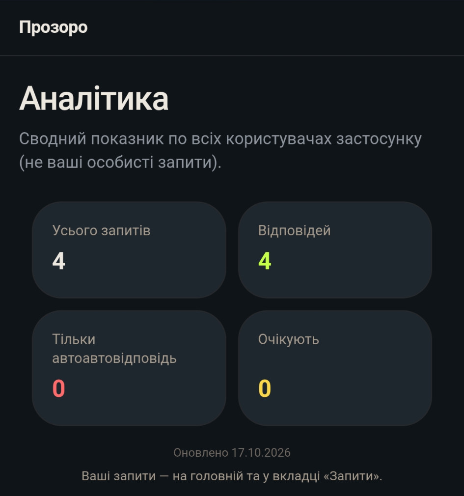

Основа для адаптации под ваш процесс. Условия запуска и проверки согласуем отдельно.
01 / ДокументыОснова для адаптации
ПрорАКТ / Proakt
Сметы и акты из Telegram
Для мастера или небольшой строительной команды. Позиции работ, количества и цены собираются в документ, который можно проверить и выгрузить в Excel.
Ввод работ → проверка → смета или акт XLSX
Что учитывать при адаптации
Нужны PostgreSQL и настройки Telegram; голосовой ввод использует внешний AI-сервис. Формат документа и прайс согласуются заранее. Импорт Google Sheets читает публичный CSV; двусторонняя синхронизация не заявляется. Сквозной сценарий и восстановление данных проверяются отдельно.
Схема сценария, не снимок приложения. Формат и результат проверяются на согласованном примере.
02 / ОбращенияОснова для адаптации
Smart Zapyt
Обращения и ответы в одном процессе
Проект info-bot-go помогает подготовить информационный запрос, проверить черновик и работать с ответами в Telegram. Исходный сценарий — обращения к госорганам Украины.
Тема → проверка текста и адресата → отправка и ответ
Что учитывать при адаптации
Почтовая цепочка требует настройки SMTP/IMAP и тестовой проверки. Правовой смысл текста проверяет человек. Статус SMTP не доказывает вручение; ответ получателя не гарантируется. Публичное размещение обращения требует отдельного согласования.
Интерфейс Smart Zapyt, 17.10.2026. Показатели на снимке.Посмотреть аналитику обращений

Интерфейс Smart Zapyt, 17.10.2026. Показатели на снимке.
03 / ПубликацииОснова для адаптации
Telegram / RSS-мост
Нужные материалы из ваших источников
Сбор публикаций из согласованных Telegram- и RSS-источников, фильтрация и передача в выбранный канал. Подходит для процесса, в котором источники и правила отбора уже определены.
Источники → отбор по правилам → публикация
Что учитывать при адаптации
Доступ к источникам и право повторной публикации согласуются заранее. Для Telegram нужны собственные настройки доступа. Пилот начинается с просмотра результатов без отправки; фильтры, повторы и восстановление после сбоя проверяются на тестовых материалах.
Схема процесса, не демонстрация отправки. Состав источников, фильтры и канал назначения определяются для конкретной задачи.
Дополнительный технический проект
Shark Dashboard
Веб-интерфейс мониторинга процессов и ресурсов с обновлением через SSE. В коде есть сборщики метрик и поддержка нескольких менеджеров процессов. Внешнее размещение требует защищённого доступа и отдельной эксплуатационной проверки.
Что приходит на вход, кто проверяет данные и какой документ или действие нужен на выходе.
02 / Границы
Согласуем условия
Форматы, доступы, внешние сервисы, хранение данных и критерии проверки результата.
03 / Проверка
Проверяем на примере
Проходим согласованный сценарий, отмечаем ограничения и решаем, что дорабатывать дальше.
Какую задачу хотите упростить?
Расскажите, что сейчас делаете вручную и какой результат нужен. Можно начать с обезличенного примера таблицы, документа или последовательности действий.